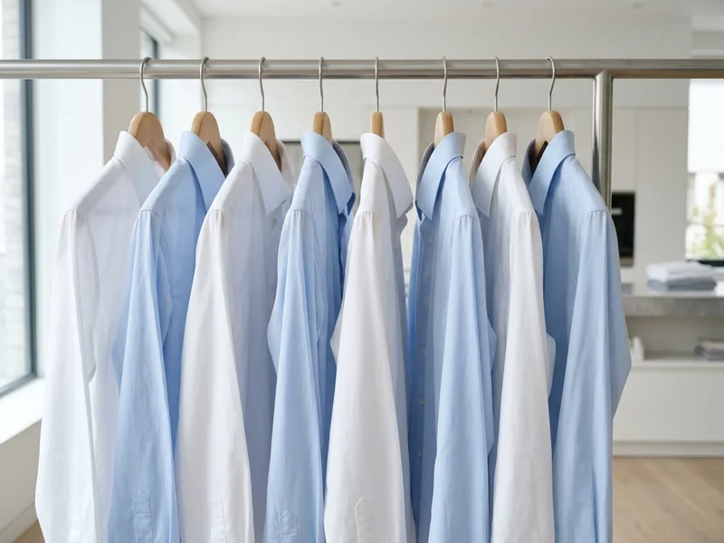
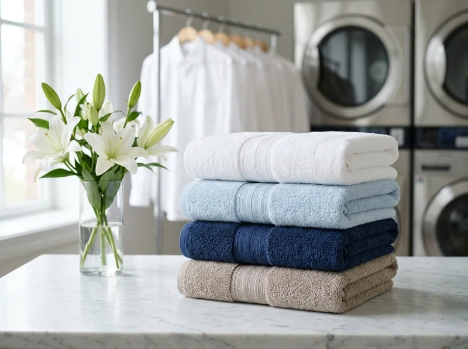
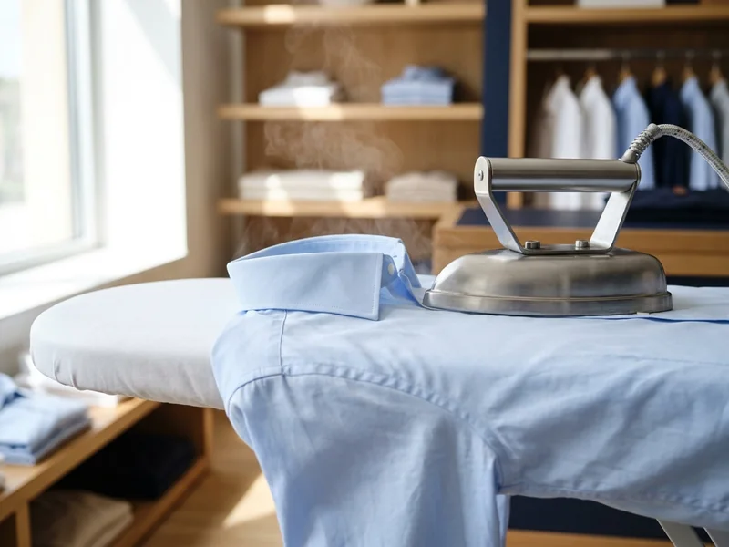
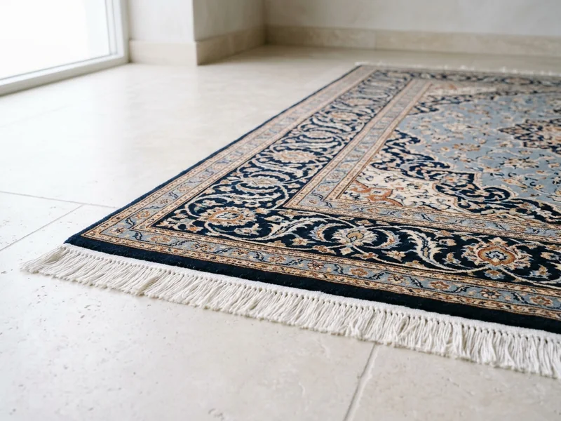
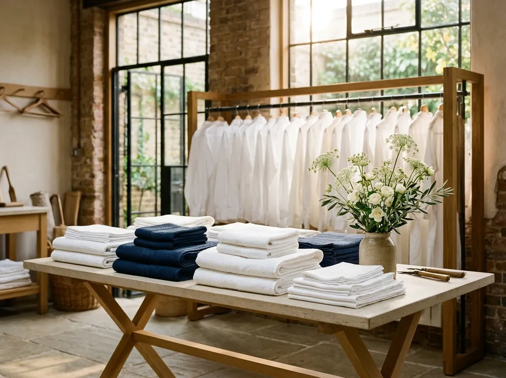

01 / 04O ESSENCIAL
Roupas do dia a dia
Lavagem e acabamento para as peças que acompanham todos os seus planos.
Da camisa de toda semana ao edredom que pede atenção extra: a gente cuida de cada peça para você aproveitar o que realmente importa.
Cuidado para a rotina real,
sem complicação.
Tem roupa que acompanha a rotina. Tem peça que guarda uma história. Cada uma merece o tratamento certo.

01 / 04Lavagem e acabamento para as peças que acompanham todos os seus planos.

02 / 04O cuidado que as peças volumosas precisam para voltar prontas para usar.

03 / 04Camisas, calças e peças sociais alinhadas para facilitar a sua semana.

04 / 04Tapetes, tecidos delicados e itens que pedem avaliação individual.
Uma jornada clara, do primeiro contato à peça pronta para voltar ao seu guarda-roupa.
Começar um pedido ↗Escolha o tipo de peça e descreva o cuidado que procura.
Defina a melhor forma de entregar e receber suas peças.
O tratamento é escolhido conforme o tecido e a necessidade.
Roupas organizadas e mais tempo livre para o seu dia.

CUIDAR TAMBÉM É PRESTAR ATENÇÃO.Boa lavanderia começa com escuta. Antes de qualquer processo, entendemos o tecido, o uso e o que você espera do resultado.
Peças delicadas recebem atenção individual.
Você entende as etapas e combina os detalhes.
Mais praticidade para sua lista de tarefas.
Mais que roupa limpa, um respiro na rotina.
Vamos cuidar das suas peças? ↗Prazo e preço dependem das peças e da região atendida.
Comece pelo tipo de peça. Se houver dúvida, descreva o tecido e o cuidado desejado ao montar o pedido.
Peças delicadas e especiais precisam de avaliação individual antes da confirmação do serviço.
Essa possibilidade depende da área atendida. Horários e eventuais custos são combinados no primeiro contato.
O orçamento depende do tipo, da quantidade e do estado das peças. Tudo é definido antes da execução.
Selecione o que precisa e monte um resumo. Este é um site conceitual de portfólio: nenhum pedido é enviado a uma lavanderia.